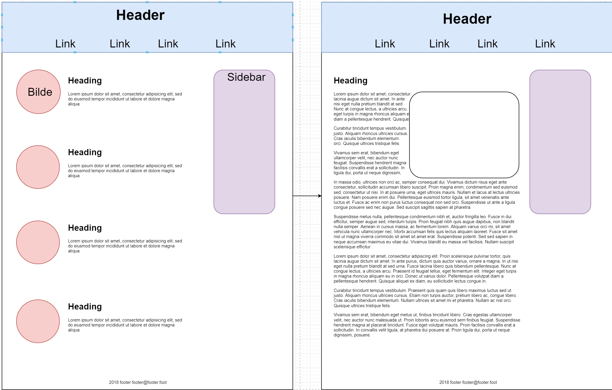

Min Layout
Her kan du se et bilde av hvordan jeg tenkte min forside og hvordan min artikkelside skulle se ut før jeg begynte å jobbe med den, og resultatet... ja det ser du på. Noen forskjeller har det blitt underveis i jobbingen ettersom jeg støtte på utfordringer med designet, men dette er et nettsted under arbeid!
